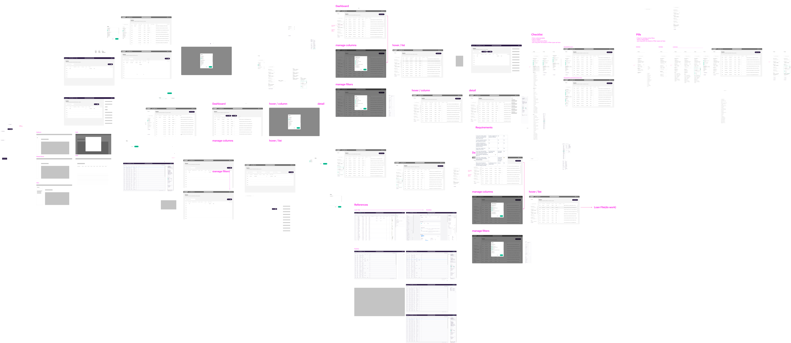

Loan Pipeline
Advanced filtering tool that helps mortgage professionals stay hyper focused on the work that matters

Research Insights
Re-configure- With each shift in direction, mortgage teams would have to rely on a different combination of tools to comb through their loans to prioritize and track which to work on.
Detective work- The traits that makes certain loans high priority and not others are often buried in the details of the loan. Without proper indexing of loan traits, teams often have to dig through files one by one to figure out which is worth working on.
Complicated databases- Centralized places where teams can see all of the loans they care about are usually filled with way too much irrelevant information. It's very hard to slice and dice the the items they see and parse out the ones that matter. The setup often feels like too much effort in a market where conditions can change any day.
Exploring ideas

We set out to build a tool that would allow teams to quickly set & adjust filters to keep an eye on all of the loans they care about at once.
The large amount of filters our users needed to work with presented lots of interesting UX and technical challeneges. So we tested prototypes, built spikes, talked to users, and iterated until we started noticing delight in our
research participants.